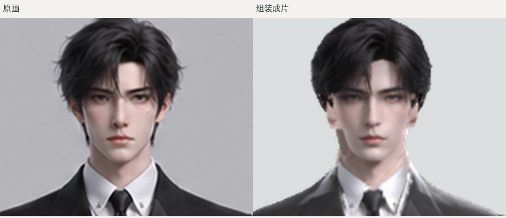
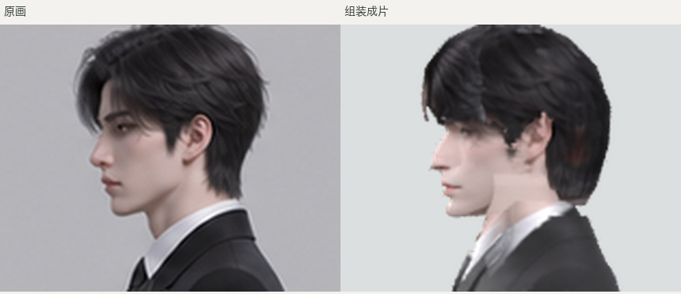
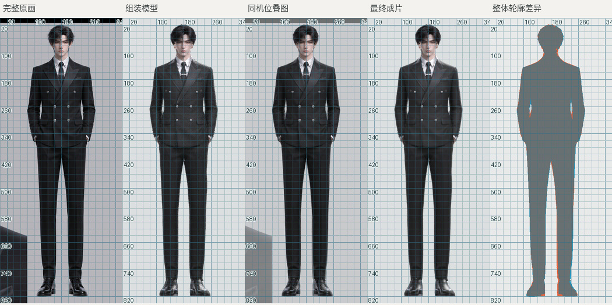
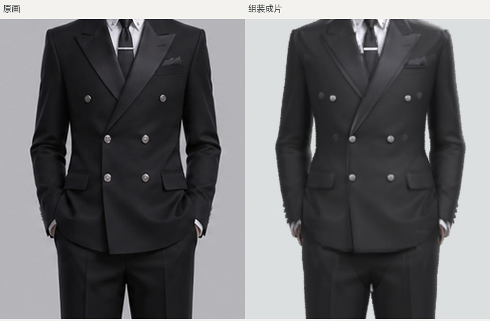
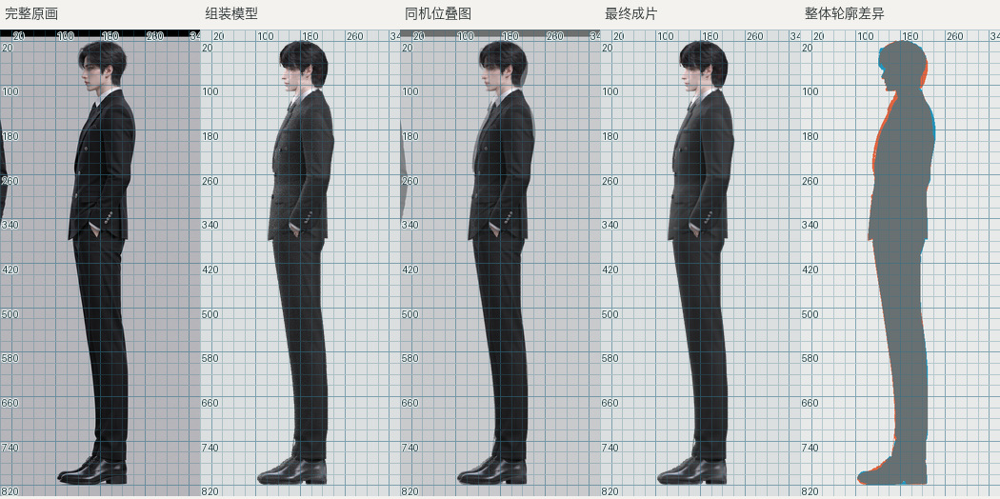
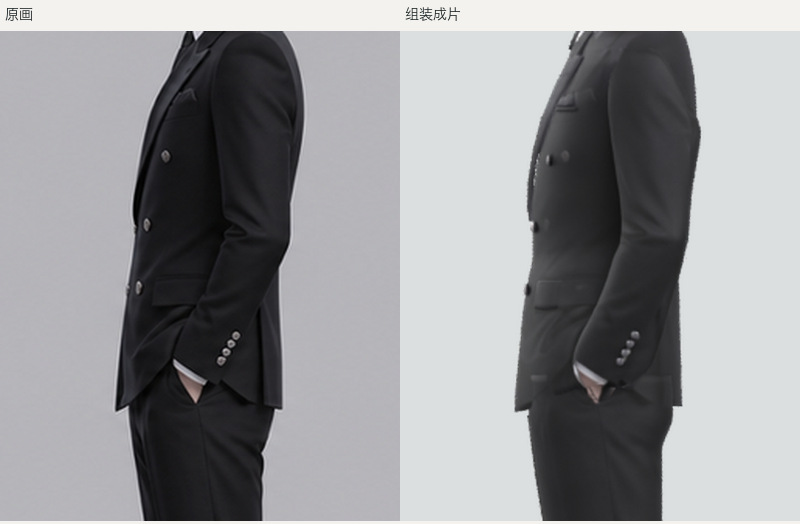
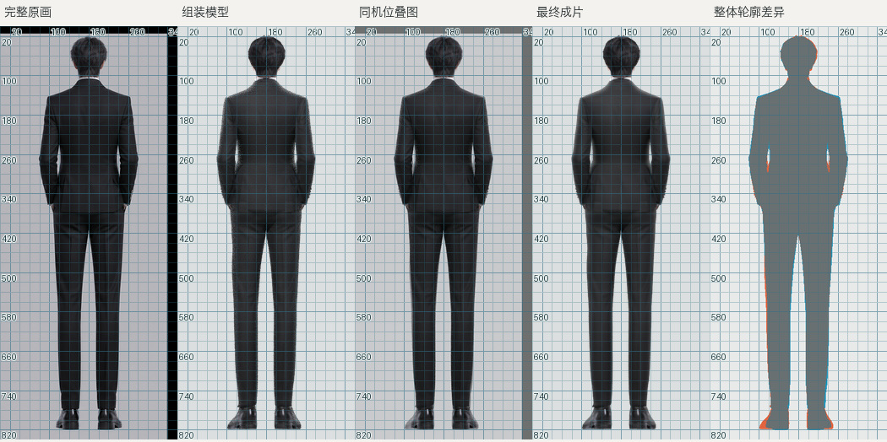
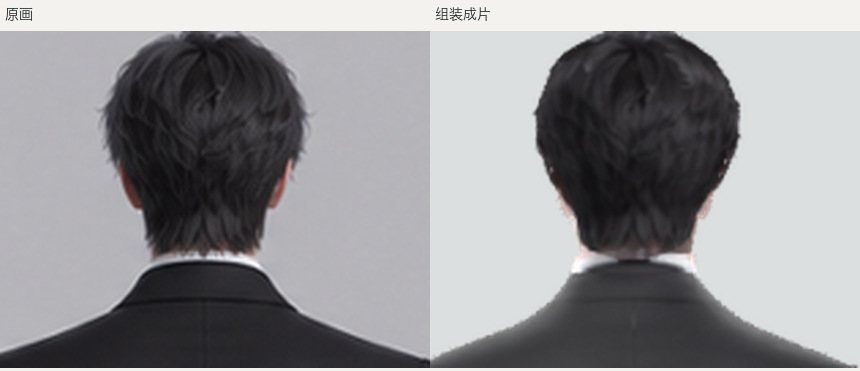
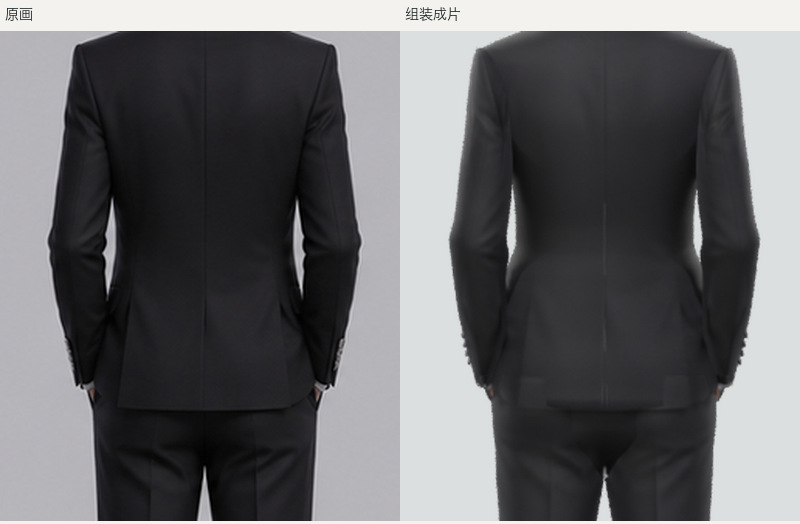

整体与逐件网格对照
蓝色为原画有而模型缺少的区域，橙色为模型多出的区域。灰色为重合，灰紫色为排除区。网格标注采用该栏原画的像素坐标，偏移为模型减原画，向右、向下为正。
逐段边界图中，白线连接模型边与原画目标，蓝圈标目标。红色表示搜索内缺边，紫色表示有多个候选，灰色表示画幅或遮挡证据不足。
完整测量记录
高精度对照 有部位需返修
本次覆盖 3/3 栏、3/3 件。已核对 0 项。
需返修 16 项 front 整体轮廓、front 可见发层、front 头脸与颈部、front 鞋履与鞋底、front 眉眼鼻唇、side 整体轮廓、side 可见发层、side 头脸与颈部、side 鞋履与鞋底、side 额鼻唇颏、back 整体轮廓、back 可见发层、back 头脸与颈部、back 鞋履与鞋底、back 后脑与领口、头脸与颈部多视图面部核对
待核对 3 项 front 戗驳领、六粒扣与领带夹、side 戗驳领、六粒扣与领带夹、back 戗驳领、六粒扣与领带夹
头脸与颈部 · 面部多视图
侧向机位符合配置，绕头部上下轴的夹角 +90.0°，侧面仰俯 -0.0°
正面 需返修
原图裁框 158 × 124 px

同位置细网格 颏点 偏差最大，0.63 px，修向原画 (+0.6, +0.1) px侧面 需返修
原图裁框 158 × 124 px

同位置细网格 颏前 偏差最大，3.16 px，修向原画 (+3.0, +1.0) px仍需处理的局部
front

需返修 原尺寸叠图 整体逐段边界定位轮廓交并比 0.967，缺少 1407 px²，多出 1771 px²
包围框左、上、右、下偏移 +0 / -2 / -1 / -2 px
原画沿法线找模型 最大 15.12 px，P95 3.99 px，匹配 3155/3284，搜索内缺边 116，多解 13，画幅不足 0
模型沿法线找原画 最大 15.14 px，P95 3.88 px，匹配 3193/3286，搜索内缺边 76，多解 15，画幅不足 2
最大可定位偏差处，模型 (198.9, 815.5) 向原画位移 (+15.1, +0.7) px造型与神态 需返修
眉眼鼻唇 需返修 领带上方的下颌与中分形状可辨，眉眼阴影偏重。对照标点 1 右外眼角 2 左外眼角 3 鼻尖 4 唇缝 5 颏点

戗驳领、六粒扣与领带夹 待核对 分件
- 可见发层 需返修 整幅网格 · 局部网格 · 穿戴与遮挡 · 逐段边界定位
轮廓交并比 0.908，缺少 85 px²，多出 173 px²
包围框左、上、右、下偏移 +0 / -2 / +0 / -18 px
原画沿法线找模型 最大 16.94 px，P95 4.98 px，匹配 330/426，搜索内缺边 51，多解 45，画幅不足 0
模型沿法线找原画 最大 13.47 px，P95 4.65 px，匹配 345/400，搜索内缺边 10，多解 43，画幅不足 2
最大可定位偏差处，模型 (199.5, 66.0) 向原画位移 (+3.8, +16.5) px
- 头脸与颈部 需返修 整幅网格 · 局部网格 · 穿戴与遮挡 · 逐段边界定位
轮廓交并比 0.703，缺少 556 px²，多出 345 px²
包围框左、上、右、下偏移 +3 / -1 / -5 / -17 px
原画沿法线找模型 最大 17.75 px，P95 15.25 px，匹配 273/354，搜索内缺边 50，多解 31，画幅不足 0
模型沿法线找原画 最大 17.23 px，P95 14.17 px，匹配 243/288，搜索内缺边 9，多解 36，画幅不足 0
最大可定位偏差处，模型 (184.4, 111.1) 向原画位移 (-7.9, +15.9) px
- 鞋履与鞋底 需返修 整幅网格 · 局部网格 · 穿戴与遮挡 · 逐段边界定位
轮廓交并比 0.847，缺少 220 px²，多出 494 px²
包围框左、上、右、下偏移 +1 / -4 / +1 / -2 px
原画沿法线找模型 最大 15.12 px，P95 5.88 px，匹配 428/438，搜索内缺边 10，多解 0，画幅不足 0
模型沿法线找原画 最大 15.14 px，P95 5.84 px，匹配 425/434，搜索内缺边 4，多解 5，画幅不足 0
最大可定位偏差处，模型 (198.9, 815.5) 向原画位移 (+15.1, +0.7) px
side

需返修 原尺寸叠图 整体逐段边界定位轮廓交并比 0.957，缺少 942 px²，多出 1838 px²
包围框左、上、右、下偏移 +0 / +0 / -2 / -1 px
原画沿法线找模型 最大 16.97 px，P95 6.25 px，匹配 2109/2184，搜索内缺边 23，多解 50，画幅不足 2
模型沿法线找原画 最大 15.21 px，P95 5.88 px，匹配 2193/2266，搜索内缺边 43，多解 27，画幅不足 3
最大可定位偏差处，模型 (103.8, 810.9) 向原画位移 (+15.2, +7.6) px造型与神态 需返修
额鼻唇颏 需返修 额鼻和颏线接近，眉弓前的头发略厚。对照标点 1 鼻尖 2 唇缘 3 颏前

戗驳领、六粒扣与领带夹 待核对 分件
- 可见发层 需返修 整幅网格 · 局部网格 · 穿戴与遮挡 · 逐段边界定位
轮廓交并比 0.852，缺少 221 px²，多出 455 px²
包围框左、上、右、下偏移 +2 / +0 / +2 / +3 px
原画沿法线找模型 最大 16.67 px，P95 8.88 px，匹配 382/420，搜索内缺边 10，多解 26，画幅不足 2
模型沿法线找原画 最大 10.36 px，P95 8.15 px，匹配 397/432，搜索内缺边 7，多解 25，画幅不足 3
最大可定位偏差处，模型 (189.7, 69.5) 向原画位移 (-16.7, +0.0) px
- 头脸与颈部 需返修 整幅网格 · 局部网格 · 穿戴与遮挡 · 逐段边界定位
轮廓交并比 0.822，缺少 330 px²，多出 84 px²
包围框左、上、右、下偏移 +1 / +0 / -7 / -11 px
原画沿法线找模型 最大 16.94 px，P95 10.20 px，匹配 264/318，搜索内缺边 34，多解 20，画幅不足 0
模型沿法线找原画 最大 11.83 px，P95 9.13 px，匹配 254/278，搜索内缺边 5，多解 19，画幅不足 0
最大可定位偏差处，模型 (184.1, 105.8) 向原画位移 (-7.6, +15.2) px
- 鞋履与鞋底 需返修 整幅网格 · 局部网格 · 穿戴与遮挡 · 逐段边界定位
轮廓交并比 0.876，缺少 143 px²，多出 460 px²
包围框左、上、右、下偏移 +0 / -9 / -1 / -1 px
原画沿法线找模型 最大 16.97 px，P95 5.86 px，匹配 343/350，搜索内缺边 6，多解 1，画幅不足 0
模型沿法线找原画 最大 14.43 px，P95 7.54 px，匹配 364/376，搜索内缺边 6，多解 6，画幅不足 0
最大可定位偏差处，模型 (103.8, 810.9) 向原画位移 (+15.2, +7.6) px
back

需返修 原尺寸叠图 整体逐段边界定位轮廓交并比 0.965，缺少 1969 px²，多出 1479 px²
包围框左、上、右、下偏移 +1 / -2 / -1 / -2 px
原画沿法线找模型 最大 15.29 px，P95 3.23 px，匹配 3086/3174，搜索内缺边 79，多解 9，画幅不足 0
模型沿法线找原画 最大 16.29 px，P95 3.01 px，匹配 3184/3280，搜索内缺边 88，多解 6，画幅不足 2
最大可定位偏差处，模型 (120.5, 235.8) 向原画位移 (+1.0, +16.3) px造型与神态 需返修

后脑与领口 需返修 后脑与领口连接可辨，局部肩线较硬。
戗驳领、六粒扣与领带夹 待核对 分件
- 可见发层 需返修 整幅网格 · 局部网格 · 穿戴与遮挡 · 逐段边界定位
轮廓交并比 0.943，缺少 100 px²，多出 182 px²
包围框左、上、右、下偏移 +0 / -2 / +2 / +1 px
原画沿法线找模型 最大 17.92 px，P95 3.80 px，匹配 335/350，搜索内缺边 12，多解 3，画幅不足 0
模型沿法线找原画 最大 10.06 px，P95 2.96 px，匹配 333/340，搜索内缺边 0，多解 5，画幅不足 2
最大可定位偏差处，模型 (218.5, 56.0) 向原画位移 (-8.0, +16.0) px
- 头脸与颈部 需返修 整幅网格 · 局部网格 · 穿戴与遮挡 · 逐段边界定位
轮廓交并比 0.112，缺少 37 px²，多出 82 px²
包围框左、上、右、下偏移 +3 / +11 / -4 / -2 px
原画沿法线找模型 最大 4.31 px，P95 3.62 px，匹配 37/74，搜索内缺边 34，多解 3，画幅不足 0
模型沿法线找原画 最大 5.40 px，P95 5.21 px，匹配 33/142，搜索内缺边 109，多解 0，画幅不足 0
最大可定位偏差处，模型 (205.5, 91.0) 向原画位移 (-1.3, -5.2) px
- 鞋履与鞋底 需返修 整幅网格 · 局部网格 · 穿戴与遮挡 · 逐段边界定位
轮廓交并比 0.766，缺少 116 px²，多出 921 px²
包围框左、上、右、下偏移 -13 / -6 / +4 / -2 px
原画沿法线找模型 最大 12.96 px，P95 6.12 px，匹配 375/376，搜索内缺边 1，多解 0，画幅不足 0
模型沿法线找原画 最大 16.92 px，P95 9.72 px，匹配 403/428，搜索内缺边 25，多解 0，画幅不足 0
最大可定位偏差处，模型 (158.1, 771.5) 向原画位移 (-16.0, +5.5) px